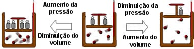
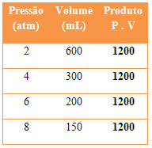
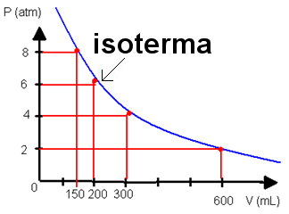
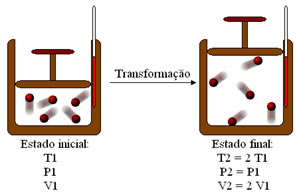
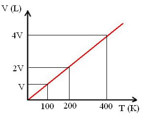
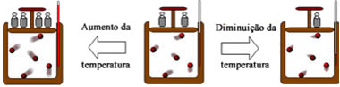
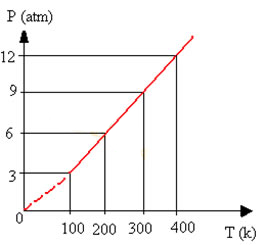

Gases
O gás é um composto molecular com características como alta compressibilidade e capacidade de expansão, não possuem volume fixo e podem ser miscíveis entre si em qualquer proporção.
O gás é uma substância em que as moléculas perdem completamente a atração umas pelas outras e se dispersam muito, além disso, essas moléculas estão sempre em estado de movimento desordenado. Esse movimento pode fazer com que algumas partículas colidam quando confinadas no recipiente, e esse impacto produz o que chamamos de pressão que o gás exerce sobre certas superfícies. A pressão é composta de força por unidade de área. O aquecimento faz com que as moléculas se movam a uma velocidade mais alta, aumentando assim sua energia cinética média (E cin). A energia presente nas moléculas de gás é diretamente proporcional à temperatura absoluta, como na fórmula: cin = KT
O gás que segue esse princípio é chamado de gás ideal (gás perfeito), mas como esse gás não aparece na maioria dos casos, ele produzirá gás real. O que torna os gases reais imperfeitos é a interação molecular entre eles
De qualquer maneira, o gás pode sofrer três tipos de mudanças: volume, temperatura e pressão. Estas são variáveis de estado, consulte a definição de cada variável:
Pressão: A pressão de um gás pode ser definida como a força exercida em uma determinada área de superfície na direção perpendicular.
Volume: O volume exato do gás não pode ser determinado porque eles sempre ocupam o volume total do recipiente em que está confinado;
Temperatura: está relacionada ao grau de agitação das partículas, quanto maior a agitação, maior a temperatura do sistema.
Neônio
Você já deve ter visto um letreiro luminoso por aí, as famosas luzes néon, mas você sabe o que faz ele brilhar? É o gás Neônio (Ne). Esse gás é Considerado um gás nobre, porque assim como os outros gases, ele não reage com nenhum elemento químico. Seu número atômico é 10 ( 10 prótons e 10 elétrons ) e peso atômico 20,183u, sendo considerado o segundo gás nobre mais leve.
Obtenção de Neônio: o gás está presente em pequena quantidade no ar atmosférico, para isolá-lo é preciso submeter o ar liquefeito a uma destilação fracionada.
Outras aplicações do Nêonio:
- O gás Neônio encontra-se presente nas lâmpadas fluorescentes.
- Quando misturado com o argônio dá origem à válvulas para raios-X.
- É usado em detectores de íons usados em laboratório.
- O gás é usado na composição das pequenas lâmpadas de sinalização usadas em aparelhos elétricos e eletrônicos .
- O Neônio é usado na forma líquida nos sensores ultrassensíveis de infravermelho.
Agora que você já conhece o Neônio, vamos falar mais sobre a família dos gases.
Equação geral do gás ideal
A lei dos gases ideais ou equação de Clapeyron descreve o comportamento de um gás perfeito com base em parâmetros físicos e nos permite avaliar o estado macroscópico do gás. É expresso como: P.V = n.R.T
Sendo,
P: Pressão do ar (N / m2)
V: Volume (metro cúbico)
n: número de moles (mol)
R: constante geral do gás (J / K.mol)
T: Temperatura (K)
Constante de gás universal
Se considerarmos que um dado gás é 1 mol, a constante R pode ser encontrada multiplicando o produto da pressão e do volume pela temperatura absoluta. De acordo com a lei de Avogadro, em condições normais de temperatura e pressão (temperatura igual a 273,15 K e pressão de 1 atmosfera), o volume de 1 mol de gás é igual a 22.415 litros. Portanto, temos:
P.V = nRT
1.22,415 = 1.R273,15
R = 22,415/273,15
R =~ 0,082 atm.L/K.mol
P. V é igual a n R T 1,22, o ponto 415 é igual a 1. R. 273 ponto 15 R é igual ao denominador 273 numerador 22 pontos 415 denominador R ponto 15 ponto final é quase igual a 0 ponto 082 espaço em t m. L dividido por K.m o l Com as conversões necessárias, também podemos expressar a constante do gás como igual a: R = 8.314 J / K.mol ou 1.986 cal / k.mol
Transformações gasosas
São aquelas em que se considera uma determinada massa fixa de um gás ideal em um sistema fechado para observar como as variáveis de estado dos gases (pressão, volume e temperatura) interrelacionam-se. Esse processo é feito por manter constante uma dessas variáveis, enquanto se observa como ocorre a variação das outras duas.
Existem três tipos de transformações gasosas, que ocorrem quando (1) a temperatura permanece constante, (2) quando a pressão permanece constante e (3) quando o volume permanece constante. Vejamos o nome dado para cada uma dessas transformações e quais são as leis que as relacionam:
Transformação isotérmica: Essa é uma transformação gasosa que ocorre com a temperatura constante, enquanto as outras variáveis (pressão e volume) variam.
A lei de Boyle-Mariotte, diz o seguinte:
“Com a temperatura sendo mantida constante, a massa de determinado gás ocupa um volume inversamente proporcional à sua pressão.”
Isso quer dizer que, se aumentarmos a pressão sobre o gás, o seu volume diminuirá e vice-versa, como a figura a seguir mostra:
Esquema de transformação isotérmica
Duas grandezas são inversamente proporcionais quando o produto entre elas sempre origina uma constante. Assim, temos: P . V = k ou P1 . V1 = P2 . V2
Veja um exemplo a seguir de transformação isotérmica. Observe que o produto entre a pressão e o volume em todos os casos sempre origina o mesmo resultado:
Dados de transformações isotérmicas
Passando os dados das transformações isotérmicas para um gráfico que relaciona a pressão e o volume, obtemos uma hipérbole equilátera, que é chamada de isoterma:
Representação gráfica de uma isoterma
Transformação isobárica: Essa é uma transformação gasosa que ocorre com a pressão constante, enquanto as outras variáveis (temperatura e volume) variam.
Primeira lei de Charles e Gay-Lussac, que diz o seguinte: “Com a pressão sendo mantida constante, a massa de determinado gás ocupa um volume diretamente proporcional à sua temperatura termodinâmica.”
Isso quer dizer que, se aumentarmos a temperatura do sistema, o volume ocupado pelo gás também aumentará, ou seja, ele expandir-se-á. Por outro lado, com a diminuição da temperatura, o gás contrair-se-á. Veja isso na ilustração a seguir:
Esquema de transformação isobárica
É importante salientar que as relações expressas em todas as transformações gasosas mencionadas aqui são verdadeiras somente quando se considera a temperatura termodinâmica, ou seja, a temperatura na escala kelvin.
Matematicamente, temos:
V/T= k
ou
V/T1=V/T2
Representação das transformações isobáricas
Transformação isocórica: refere-se a uma transformação gasosa que ocorre com o volume constante, enquanto as outras variáveis (temperatura e pressão) variam.
A segunda lei de Charles e Gay-Lussac diz o seguinte: “Com o volume sendo mantido constante, a pressão exercida pela massa de determinado gás é diretamente proporcional à sua temperatura termodinâmica.”
Isso quer dizer que, se aumentarmos a temperatura do sistema, a pressão exercida pelo gás também aumentará e vice-versa. Observe:
Esquema de transformação isocórica
Matematicamente, temos:
V/T=k
P1/T1=P2/T2
Portanto, assim como ocorre no caso das transformações isobáricas, nos gráficos das transformações isocóricas, a relação entre a pressão e a temperatura sempre dará uma reta:
Gráfico de transformação isocórica ou isovolumétrica
Exercícios de fixação
Questão 1 - (F.M. Itajubá - MG) O comportamento de um gás real aproxima-se do de um gás ideal quando:
A) submetido a baixas temperaturas.
B) submetido a baixas temperaturas e baixas pressões.
C) submetido a altas temperaturas e altas pressões.
D) submetido a altas temperaturas e baixas pressões.
D) submetido a baixas temperaturas e altas pressões.
Selecione uma das alternativas abaixo:
Questão 2 - Em uma transformação isovolumétrica, a temperatura final do processo é o quádruplo da temperatura inicial. Sendo assim, determine a relação entre a pressão final e inicial.
A) A pressão final será quatro vezes menor.
B) Não haverá variação de pressão, uma vez que a transformação é isocórica.
C) A pressão final será o quádruplo da pressão inicial.
D) A pressão final e a inicial serão iguais.
E) A pressão final é o dobro da pressão inicial.
Selecione uma das alternativas abaixo:
Questão 3 - O estado de um gás perfeito é caracterizado por quais variáveis de estado?
A) Rio de Janeiro e Goiás.
B) Volume, temperatura e pressão.
C) Graus e radianos.
D) Sólido, líquido e gasoso.
E) Nenhuma das alternativas
Selecione uma das alternativas abaixo: :